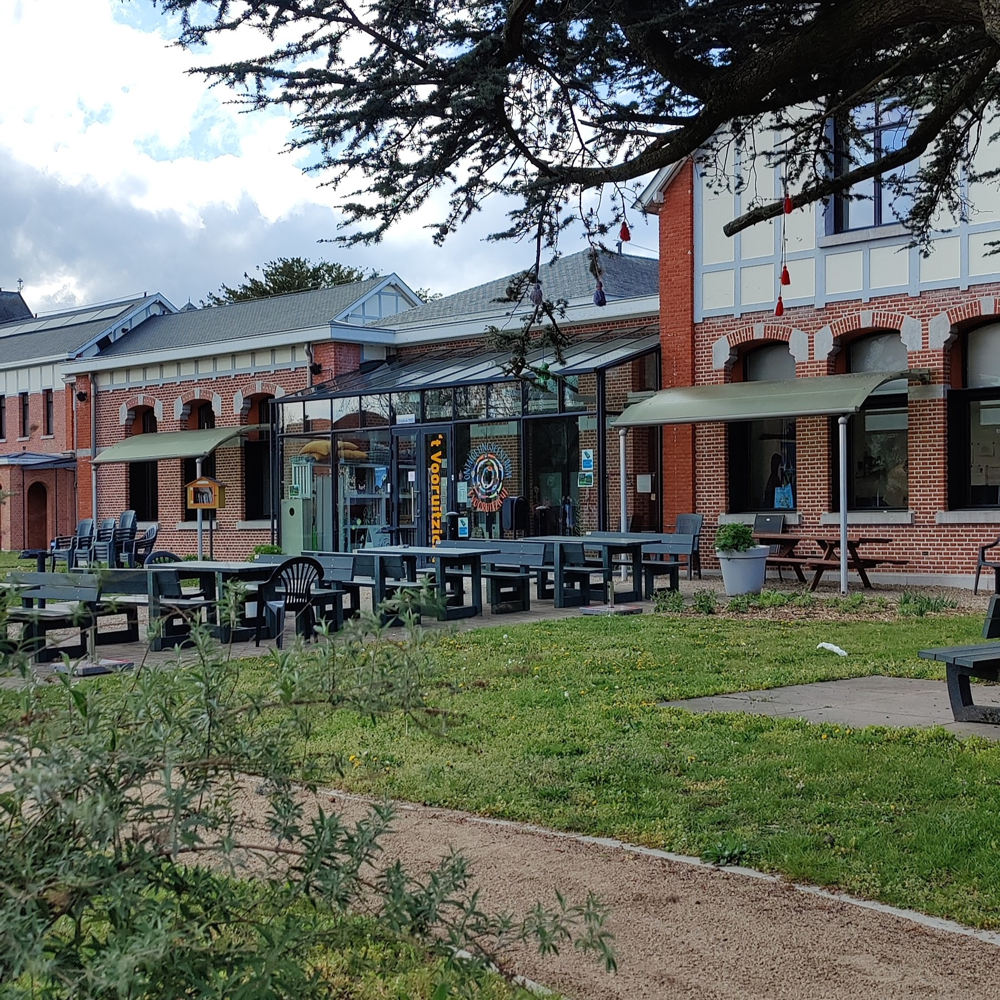

Foto Heden
Swipe voor volgende stop
Bij de bouw van de infirmerie in 1861 werden aan weerszijden van het hoofdgebouw twee paviljoenen voorzien. Hun functie was de opvang van patiënten met een besmettelijke ziekte.
In het rechtse paviljoen huist nu ’t Vooruitzicht, een ontmoetingscentrum waar iedereen welkom is.

Volgende Stop
Swipe voor huidig 't vooruitzicht